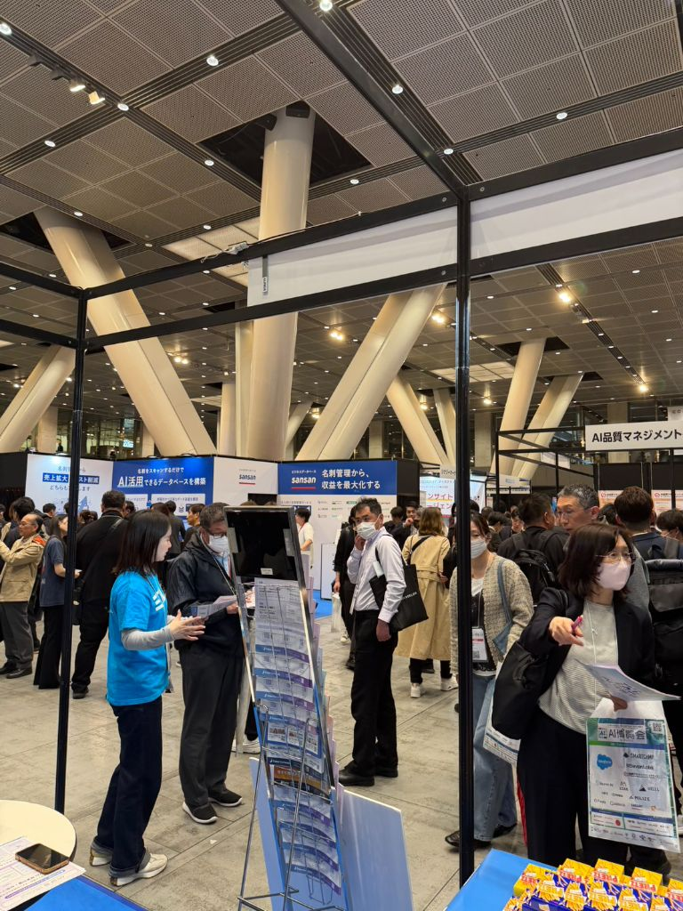
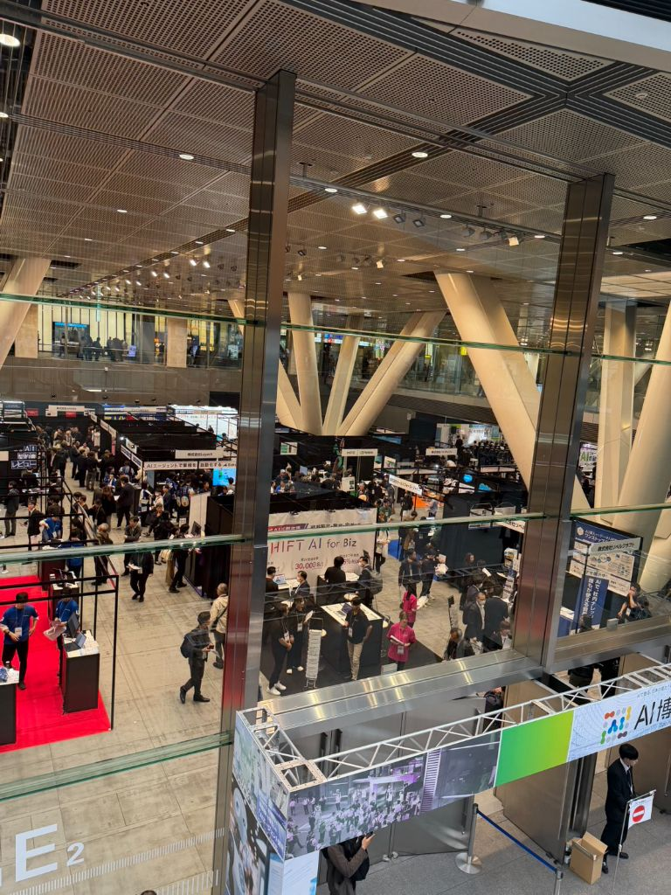

東京フォーラムのAIイベントに参加🤖便利すぎてビックリ！
もう本気でAIの発達で社内効率化。便利すぎる✨とりあえずやってみる、それが私達！
今日は東京フォーラムで開催していた
AIイベントに参加してきた🤖
「AI博覧会 Spring 2026」って
すごく大規模なイベントで、
めっちゃ人が多かった！

※ AI博覧会 Spring 2026。東京フォーラムの天井も綺麗✨
🚀 AIの発達がすごい
今回のイベントで一番感じたのは、
「もう本気でAIの発達がヤバい」ってこと。
展示されてたAIツールを見て、
「これ、うちでも使えるじゃん！」って
思うものばかり😳

※ たくさんのブースで最新AI技術が展示されてた！
例えば：
-
🤖
見積書の自動作成AI
写真撮るだけで、AIが自動で見積もり作成してくれる！ -
📞
電話対応AI
お客様の電話を24時間AIが対応。予約も自動で入る！ -
📝
議事録作成AI
会議の内容をAIが自動で文字起こし＆まとめてくれる！ -
📊
経理・帳簿AI
領収書撮るだけで自動で帳簿入力。確定申告も楽々！
どれもこれも便利すぎて、
「うちで導入したい！」って思った✨
💼 社内効率化が進む
AIを使えば、
今まで何時間もかかってた作業が、
数分で終わる時代になってる。
見積書作成も、
電話対応も、
経理作業も、
全部AIがやってくれる😳
これって、
社内の効率化がめちゃくちゃ進むってこと。
今まで3人でやってた仕事が、
AIのおかげで1人でできるようになる。
😰 職業がなくなりそう？
正直、イベント見ながら思ったのは、
「たくさんの方の職業なくなりそうだね」ってこと。
AIが全部やってくれるなら、
人間がやる仕事って何？って考えちゃう😅

※ 会場は大盛況！みんなAIに興味津々✨
でも逆に考えると、
AIを使いこなせる人が強い時代ってこと。
AIに仕事を奪われるんじゃなくて、
AIを使って効率化して、
もっと価値の高い仕事に集中する。
そういう考え方が大事なんだなぁって、
イベントを通して感じた✨
🚀 とりあえずやってみる
私達の会社の良いところは、
「とりあえずやってみる」こと！
新しいツールやサービスが出たら、
すぐに試してみる。
「難しそう」
「失敗するかも」
って考える前に、
まず使ってみる😊
それが、
時代に取り残されないコツだと思ってる✨
💕 新しいもの大好き
うちのスタッフは、
みんな新しいもの活用大好き！
「このAIツール良さそう！」って言うと、
みんな「使ってみよう！」って
すぐにノッてくれる。
こういうチームだから、
新しい技術もどんどん取り入れられる。
スタッフのみんなに、
いつも感謝してる🙏
🌟 これから
今日のイベントで、
いくつか気になるAIツールがあった。
まずは見積書作成AIと、
電話対応AIを導入してみようかな🤖
お客様にとっても、
24時間いつでも問い合わせできるって便利だし、
私達も夜中の電話対応しなくて済む😂
AIを味方につけて、
もっとお客様に喜んでもらえるサービスを
提供していきたいな✨
💭 今日の気付き
- ✓ AIの発達がすごい。もう本気で便利すぎる🤖
- ✓ 社内効率化がどんどん進んでいく時代💼
- ✓ AIを使いこなせる人が強い✨
- ✓ とりあえずやってみる。それが大事🚀
- ✓ 新しいもの活用大好き！それが私達の強み💕